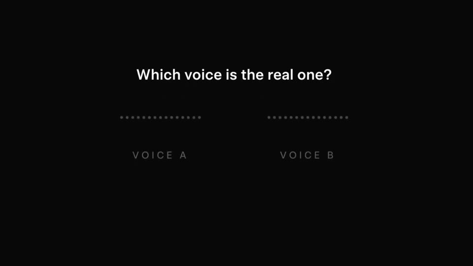
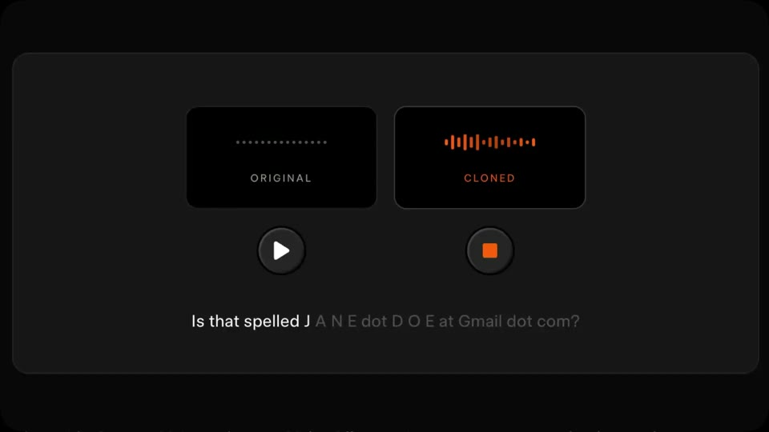
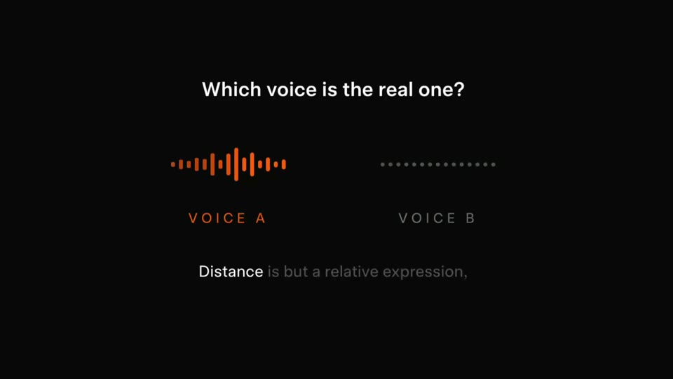
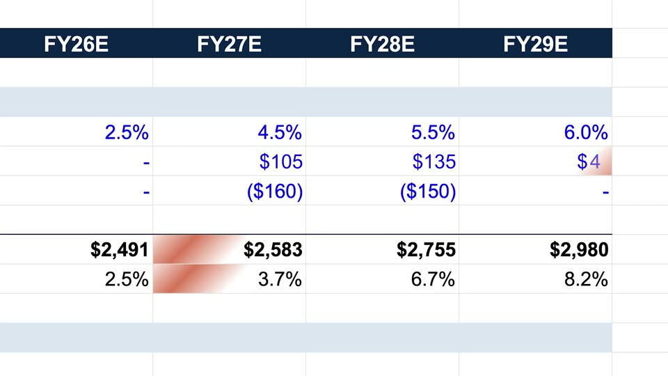
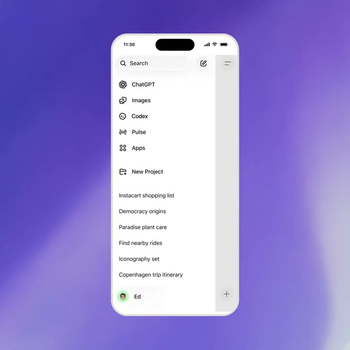
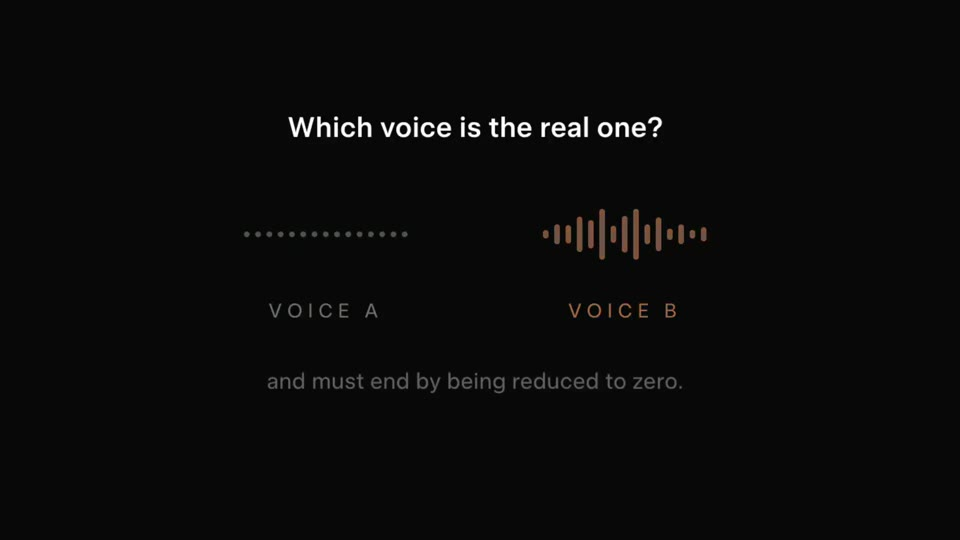

Guess the plate
A question the viewer answers before Kallo does. Two plates, the same words, one detail different. The slots stay empty; a beat of silence; then the real numbers land. Round two is left open for the replies.
Colour world. Cream stage; the empty slots fill in the macro colours when the answer lands.
The film, beat by beat

A question
“Same meal. One detail. Which has less fat?” sits alone on cream and rises into a header.

Two plates
Two cards, each full-bleed with its photo plate: “rice with a grilled chicken thigh and greens” and “… skin removed, and greens”.

The parse
Both lines snap word by word from grey to ink; the macro slots below sit idle as dotted lines.

Hold
One second of silence for the viewer to guess.

The reveal
The slots go live: 658 vs 548 kcal, fat 22 vs 13 g.

Round two
Faster: one cup vs two cups of rice with braised pork and egg; the slots stay empty. “Answer in the replies.”

In the app
Both meals in Kallo, on an iPhone slab and on the web.

Sign-off
The question stays open; the Kallo mark lands under it.
How the product enters
The viewer does the product’s job for three seconds and gets it wrong or right; then Kallo does it instantly. The app shows up as the answer.
It reads as a quiz more than a launch. Stronger as the second post of launch week than as the launch film.
Decisions for you
What we make
Data: both real landing-page pairs (skin on/off; one vs two cups). Codex: two plated photos per round, top-down. Remotion: the cards, the slots, the parse.